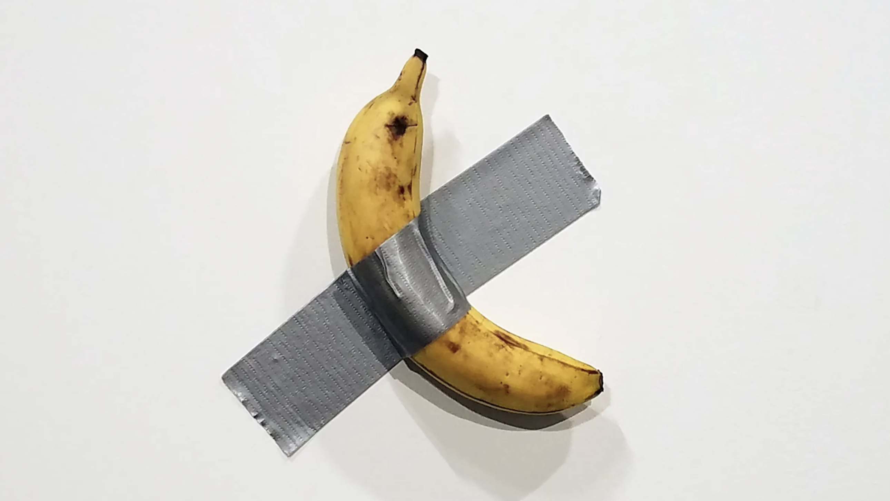

¿Todo es arte?
Las situaciones de aprendizaje son actividades planificadas por el docente que permiten al alumnado aplicar sus conocimientos y habilidades en contextos reales o simulados, promoviendo el desarrollo de competencias clave. Estas actividades implican el despliegue por parte del alumnado de actuaciones que contribuyen al desarrollo de las competencias clave y competencias específicas.
Antes de iniciar este curso, es necesario que el profesorado entienda el proceso que se sigue a la hora de diseñar una situación de aprendizaje. Para ello se toma un caso concreto, el del diseño de la situación de aprendizaje "Oro parece, plátano es", desde el momento inicial de la definición del tema, pasando por su contextualización en 2.º de ESO en la asignatura de Educación Plástica, Visual y Audiovisual, centrando la idea en el ámbito del “Arte sin soporte – Soportar el arte", su articulación en torno a la pregunta detonante “¿Todo es arte?” y la concreción final, con la toma de referencia de la obra "Comedian" de Maurizio Cattelan como centro de diseño.
En esta sesión...
Analizaremos el proceso de diseño que se ha seguido para la creación de la situación de aprendizaje "Oro parece, plátano es", a la que podemos acceder en apartado "Caso práctico para el análisis" en este mismo curso.
